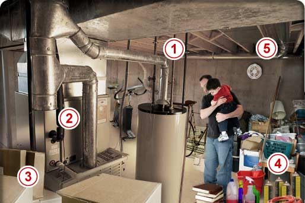

HomeHero At Hand for Peace of Mind™
My Home Safety
The Basement
Basements are a natural space for growing families to expand into. Besides storage, they often contain electrical and gas fired equipment including a furnace, hot water heaters and laundry appliances. Whether finished or unfinished, basements frequently become play areas and living space.
- Gas connections
- If you smell gas
- Hot dryers
- Storage
- Smoke detector
- Have you considered...
- Gas connections for furnaces, gas dryers and hot water tanks are a potential hazard that can be eliminated by professional installation and periodic inspection and maintenance.
- If you smell gas – don’t take a chance. Most gas companies maintain an emergency hotline that will bring a technician to your home who will shut off the gas immediately. Then get a professional to handle repairs.
- Hot dryers are a potential hazard and everyone in your household needs to be aware of the simple things that can reduce the hazards of fire. Clean the lint trap with each load, keep clothes and other flammables off the surfaces of the dryer, and avoid leaving your dryer running when you leave the house.
- What’s stored in your basement? Know what’s dangerous and get rid of it before it causes a fire. And don’t let too much flammable material build up and become an unnecessary risk.
- Install a UL approved smoke and carbon monoxide detector to give you and your family advanced warning if an accident were to occur.
- Gas connections
- If you smell gas
- Hot dryers
- Storage
- Smoke detector
